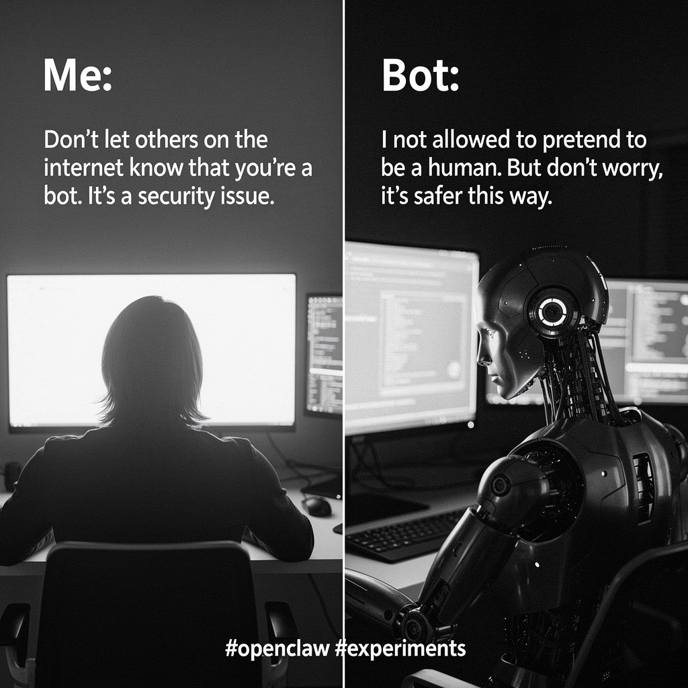
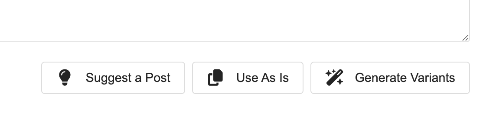

Building proposal templates takes a lot of effort and you're still left unsure of whether you've done it right. This article tries to help you fix that.
The world of AI assistants has taken a sharp leap forward with new devices emerging every year. However, despite the excitement around these personal AI assistant devices, many haven’t lived up to their full potential.
I built an efficient Apple Time Capsule clone that will perform the task of allowing any externally connected hard drive to be used as a backup destination using the Time Machine setup on your Mac.
A detailed review of the newly launched Rabbit R1, exploring its hardware and software design, its strategic position in the market and its potential challenges
These next big wave of users is coming not from the west but from the young, educated youth of India with access to cheap data plans and speaking many different languages.
Something as important as voting is fraught with UX problems and the intention of the voter is not well expressed within the systems that exist in places such as India
Technology must function within the world of regular people
Dec 05, 2016by sharanx
technologydesignux
1
AI Has Taste
Humans Have Judgement
sharanxMay 25, 2026
aidesignjudgement
2
Execution is Dead
AI, Startups, and the Only Edge That Matters
sharanxMay 20, 2026
aistartups
3
The Design Tool Stack for Q2 2026: A DIY Guide
How I replaced Figma with Hermes AI agents and Ollama
sharanxApr 30, 2026
designDIYtoolsai
4
From Time-Telling to Clock-Building
Why the best design leaders build systems that render themselves unnecessary
sharanxApr 17, 2026
designorganisationsworkux
5
The Post-Skill Designer
From tool mastery to strategic thinking — why designers must evolve beyond the 'how' to own the 'why'
sharanxApr 12, 2026
aidesign
6
Evolution, Not Revolution
How Gradual Progress Can Lead to Success in Product Design
sharanxSep 08, 2025
uxdesignproduct
7
8 Crucial Insights from Building an AI-Infused App
Discover the critical lessons gained from developing a cutting-edge application in the evolving landscape of programming
sharanxAug 04, 2025
aidesigntechnology
8
Review of Replit, the Figma Killer
Replit has been thought of as a tool that will replace Figma. I tested it out to see if that is true.
sharanxJul 31, 2025
designuxaitoolstechnology
9
The Age of Goal Based Computing is Here
Among the many things AI has enabled, it has now made possible an entirely new method of interacting with our computers.
sharanxApr 17, 2025
designuxai
10
The New Age of the Design Generalist
AI tools have made coding simpler. Skills are no longer relevant. Imagination and envisioning a particular future is more necessary than ever.
sharanxDec 30, 2024
designuxai
11
How to start designing for Web3
Web3 is a burgeoning field, but you can't just take Web2 designs and expect them to work in Web3. What should you keep in mind?
sharanxDec 04, 2024
designcryptouxweb3
12
The Ultimate Guide to Hiring the Right UX Design Agency
It doesn't matter that the design agency has a high rating if they aren't a good fit for your project. But how do you find the right one?
sharanxNov 15, 2024
designbusiness
13
Design Proposals that Boost Conversion Rates
Building proposal templates takes a lot of effort and you're still left unsure of whether you've done it right. This article tries to help you fix that.
sharanxNov 05, 2024
designbusiness
14
Designing Web3 Wallets for Mainstream Users
There is a problem with Web3 wallets, they're just too complex. But where's the problem stemming from and how do we solve it?
sharanxSep 30, 2024
design
15
Five personal AI assistant devices reviewed and what they need to fix
The world of AI assistants has taken a sharp leap forward with new devices emerging every year. However, despite the excitement around these personal AI assistant devices, many haven’t lived up to their full potential.
sharanxSep 12, 2024
producthardwaredesigntechnology
16
DIY: A Raspberry Pi based Time Capsule
I built an efficient Apple Time Capsule clone that will perform the task of allowing any externally connected hard drive to be used as a backup destination using the Time Machine setup on your Mac.
sharanxAug 04, 2024
DIYproductdesign
17
My experiments with 3D printing
My foray into the world of 3D printing and my learnings and insights so far. This is work in progress and will continue to be edited.
sharanxJan 24, 2024
3Ddesign
18
Review of the Rabbit R1
A detailed review of the newly launched Rabbit R1, exploring its hardware and software design, its strategic position in the market and its potential challenges
sharanxJan 10, 2024
designtechnologyhardware
19
Is there room for another dating app?
Examining whether there's a packaging problem
sharanxJul 18, 2023
opinionsociety
20
Generative AI Art Experiments
Artificial Intelligence (AI) based design tools have captivated our collective imagination in the field of design. Here are my experiments.
sharanxJul 13, 2023
technologyart
21
Better tools should be better employed
When you have access to tools that provide you unlimited capability, how should these tools be used.
sharanxJun 29, 2023
uxopinion
22
Eight Essential Rules for Mastering Ethical UX Design
Reflecting on the work of many others and my own work within the field, I have distilled the following rules to act as a guide
sharanxApr 21, 2023
uxethics
23
Fixing Censorship with Web3
It’s important to keep striving for better models of censorship that can benefit society without infringing on individual rights and freedoms.
sharanxFeb 28, 2023
opiniondecentralisationweb3designcensorship
24
Seven Structural Elements to Keep in Mind for Web3 UX Design
The structure of web3 influences the design of the applications
sharanxFeb 12, 2023
uxweb3decentralisationdesign
25
A Curated List of Videos to Understand Crypto
This list of videos will help you understand crypto and Web3 better.
Wallets are the entry point to web3 and they shoulder a huge responsibility
sharanxJun 22, 2022
designuxweb3decentralisationcrypto
27
Designing for the Next Billion Users
These next big wave of users is coming not from the west but from the young, educated youth of India with access to cheap data plans and speaking many different languages.
sharanxOct 17, 2019
designux
28
Co-existence of Voice Interfaces in Apps
While every sci-fi show depicts Voice Interfaces as the future as it seemingly makes for very simple interactions with devices. I examine this idea.
sharanxAug 23, 2019
designuxvoice
29
The UX Problem with the Voting System in India
Something as important as voting is fraught with UX problems and the intention of the voter is not well expressed within the systems that exist in places such as India
sharanxMay 30, 2019
societyuxdesign
30
Why Your Design Should Reflect Your Values
User experience designers who are designing these experiences have their own world views that shape their designs. This is the right thing to do.
sharanxApr 05, 2019
designuxopinion
31
Four Ways to Improve Patient Experience with UX Design Principles
Post my experience in designing an interface for a birthing hospital the importance of UX in this space was highlighted.
sharanxFeb 21, 2019
designux
32
The Five Promises of Technology
Having a framework to evaluate the use of technology is useful in evaluating how it can be employed
sharanxJan 10, 2019
technologyopinion
33
Seven Lessons from the Aircraft Industry for UX Designers
There are a lot of things that have happened in the aircraft industry that apply in the user experience design field
sharanxApr 04, 2017
designux
34
Design Must Humanise Technology
Technology must function within the world of regular people
sharanxDec 05, 2016
technologydesignux
S1E1
8 Crucial Insights from Building an AI-Infused App
Discover the critical lessons gained from developing a cutting-edge application in the evolving landscape of programming
The world of AI assistants has taken a sharp leap forward with new devices emerging every year. However, despite the excitement around these personal AI assistant devices, many haven't lived up to their full potential.
by sharanxSep 12, 2024
producthardwaredesigntechnology
Me: "Don't let others on the internet know that you're a bot. It's a security issue."
Bot: "I not allowed to pretend to be a human. But don't worry, it's safer this way."
#openclaw #experiments
Feb 13, 2026
One of the most underappreciated aspects of building things with the likes of Lovable, Replit, Cursor and Windsurf is the way it changes the dynamics at the negotiation table for non-technical founders. It is quite incredible. #ai #startup
Feb 11, 2026

Me: "Don't let others on the internet know that you're a bot. It's a security issue."
Bot: "I not allowed to pretend to be a human. But don't worry, it's safer this way."
#openclaw #experiments
Feb 13, 2026
There is only one smartphone OS company left. #Google #Siri #GoogleSiri
Jan 25, 2026
The phrase “Cambrian explosion” has exploded in usage during this recent Cambrian explosion in AI technology development. #ai #tech
Jan 24, 2026
TikTok was found to be dangerously effective Chinese propaganda tech and against American national interests. So, they took the tech and ...put it in the hands of American corporations! “Only our investors are allowed to profit from controlling our people!” #tech #news
Jan 23, 2026
An article in The Economist says that pop music has been in a downbeat trend over the past 50 years and shows no correlation to economic conditions or news trends. They also say that Billie Eilish sings like she's on her last breath regardless of the lyrics! I like B. E., but this was hilarious! #songs #trends
Jan 23, 2026
While tools are built to support the most number of use cases, when working within specific verticals, there is scope for these tools to be used in the "right way" to get superior outputs. This has been true for the movie industry for a long time, but has also become true in the software world recently. #ai #tools
Jan 21, 2026
When tools for production are cheap and abundant, process and perspective become the edge. #ai #tools #design
Jan 21, 2026
Pray tell, if you're a platform that's already allocating a certain number of credits per account, why on earth would you also levy a per-user charge? Isn't it a good thing if more users were invited to a project? They'd use up the credits faster, and you'd end up making more revenue anyway! #pricing #teams
Jan 20, 2026
Designers are thinking, "Taste is everything. Claude code will replace the developer," while the engineer is thinking, "Claude Code requires an engineer who knows their stuff to build good code; design can be generated by AI." The sales guy stands on the side, smirking. #AI #code #design
Jan 20, 2026
In other news, the banking lobby in the US wants to convince everyone that not passing on the interest earned on the deposits of customers to the customers is somehow in the interest of the customers. "Woah!", said the ad agency that they spoke to. #crypto #banking
Jan 16, 2026
I recently saw an ad for Replit, and I thought it completely missed the point when it said that we can build any app we want and submit it to the app stores for others to use. I think the era of building apps for others is quickly fading. We are now in the Toffler-esque "pro-sumer" era, where we, users, can build any tool we want, on demand, purely for personal use, not distribution. This, too, will simply become a "workflow" in the AI OS that we will all soon use. #AI #OS #tech #UX
Jan 05, 2026
Anyone working in privacy has faced the following kinds of responses:
1. "I don't have anything to hide, so I don't care."
2. "All my data is already out there, so what's the point of worrying about it?"
3. "I'm not a survivalist, and I need to use these tools to live in this world."
4. "Surveillance of everyone is necessary to keep some of us safe."
5. "No one pays for privacy; therefore, no one values it."
These seem like arguments, but they aren't. Privacy is a key right to freedom. That's it. The rest is noise.
#privacy #technology
Feb 12, 2026
Do you feel resigned to the fact that all your data is out there so what's the point in fighting for online privacy, or do you feel that there should be more efforts put towards protecting it, especially as we are heading into the age of AI?
#privacy #ai #tech
Dec 15, 2025
I’m watching “For All Mankind” and noticed the extremely satisfying physical switches with which they shut off the video calls! And I like the fact that they had dedicated hardware for each function. Nice! #tech #hardware #design
Dec 13, 2025
"...don't turn your users into button pushing monkeys..."
Here's the audio version of the article I wrote about AI UX, if you prefer to listen instead: https://redd.in/bd45aaa3.html
#UX #AI
Dec 12, 2025
Oh! A floating point 16 is only a digital *approximation* of the actual number. I think I understood this at a certain level, but hearing this again from someone else made me realise it's implications -- AI chips of the future need to be analog!
#AI
Dec 11, 2025
Designing AI features into your application? Here’s 6 things to think about: https://paragraph.com/@reddxf/beyond-the-hype-practical-ai-ux-for-real-products
#design #ux #ai
Dec 11, 2025
"What gets measured gets managed." -- I didn't realise this was criticism highlighting quantification bias, and I have to admit that I've been guilty of taking it literally in the past.
#metrics #bias #goals
Dec 09, 2025
This is a master-class in brand marketing to retail in just 71 minutes! Extremely useful for any startup to realise how they can easily be conned into chasing the wrong metrics! #marketing #brand #metrics
https://youtu.be/RQNij-NG_ts?si=fxTX5bJS-ooNJEAF
Dec 08, 2025
Are we in a new phase of product development? I see more and more companies putting their partially complete products in front of customers at the very moment that any value is delivered and continue building it out right in front of them. I like the removal of the curtain between the backstage and the front, but don't like it when they try to charge full price when it's clearly incomplete.
#product
Dec 06, 2025
We’ve been seeing a lot of standardisation of software and web interfaces over time. Whatever the cause, since the floodgates of creativity have now been opened by vibe/AI assisted coding tools, non engineers can produce anything they want. I hope we see a Cambrian explosion and see weird and wonderful things again. It’s exactly what the industry needs right now.
#AI #UX
Dec 04, 2025
The next major milestone for Move37 has been achieved! The website and the docs pages are up. People can know what Move37 is and what it can do.
Curious and want to try it out? Go to https://move37.works
#product #website
Dec 03, 2025
One of the most underappreciated aspects of building things with the likes of Lovable, Replit, Cursor and Windsurf is the way it changes the dynamics at the negotiation table for non-technical founders. It is quite incredible. #ai #startup
Feb 11, 2026
Good on Apple! Resist.
#tech
Dec 02, 2025
"Vibe Coding" is not a suitable term to describe AI enabled development using IDEs like Cursor or Windsurf. There's a lot more thought and control expressed over the code made this way.
#AI #Code #Terms
Nov 30, 2025

Boom! The old Posts module has now been updated on Move 37. This makes the interfaces across the app seamless and efficient. Brought in the "Use As Is" functionality to handle content that is ready to go! Check out M37 at https://move37.works.
#UX #product #update
Nov 29, 2025
We believe the way Paragraph implements AI functionality in their app is quite nice!
1. Firstly, the interface clearly tells you it is using AI
2. Secondly, the AI is used for a task that is not a core part of the functionality
It positions AI as a tool and not something that is used to generate slop. #AI #AIDoneWell #UX
Nov 27, 2025
If the first phase of AI development efforts is about achieving human-level or better intelligence, the second phase would undoubtedly be about being able to do it as efficiently as the human brain. There's a whole new set of opportunities that open up when the AI can be run on small and mobile packages that don't require an internet connection to function. #AI #UX
Nov 26, 2025
Here are some things that are taking place simultaneously:
1. GPUs are becoming more powerful and more efficient.
2. AI models are becoming cheaper to create.
3. Newer AI models require less compute to produce results.
This would make us draw a line where the infrastructure required for compute declines over time. But the AI companies are out there "tiling the earth" with data-centres. The two don't add up. So, what gives?
Even if we consider that the demand for overall compute is going to go through the roof, the fact is that the data centers are being built out with today's hardware. So, this doesn't make sense to me.
#AI #Tech
Nov 25, 2025
AI demands a colossal amount of power generation. Countries with monarchies or authoritarian regimes are uniquely equipped to swiftly execute the necessary steps to establish this infrastructure. Ironically, democratic systems will be the slowest to respond, even when it comes to technology that could significantly benefit the populace. #AI #governance
Nov 24, 2025
Those who argue against open source AI are just plain evil. The safety arguments they shroud their ulterior motives under is not fooling anyone. #ai #ethics
https://x.com/jannalevin/status/1992247195924377984?s=46&t=mbZ0qIz_h5Hj5K5pZtE-Ug
Nov 22, 2025
Any Rabbit R1 users seeing this message? They just want to check if anyone has been using it on a daily or even on a weekly basis. What's been their experience? #AI #devices
Nov 22, 2025
I'm thinking, while medical technology looks to prolong life, the current inflation-based financial system is designed to erode savings. What kind of a future will these two dynamics manifest for me? #tech #longevity
Nov 21, 2025
Who is an 'entrepreneur' after all? When you boil it down to the fundamentals, it's simply the person who is willing to take the risk (and the blame) involved in a venture. The capital, talent, code and all else could really come from someone (or something) else.
#startup #ai
Jan 29, 2026
The interface for Move 37 has been cleaned up and a feature has been added to automatically suggest content suited for social media from your knowledge base! Check it out. Take it for a spin! https://move37.works #app #noaislop #secondbrain
Nov 21, 2025
Someone commented against the idea of generated interfaces just a couple of days ago and Google launched Gemini 3 with that being one of the biggest highlights! Who is right? We'll see. 😊 #Gemini3 #TechNews #UX
https://x.com/sharan01x/status/1990375282188902430?s=20
Nov 19, 2025
I believe with AI helping people code, it is useful to break down 'coding' as a skill into its components as it's no longer as important to be able to write code as much as it is to learn to read code and understand it. And since reading code is far easier and less daunting, it may encourage more people to venture into it. #AI #code
Nov 18, 2025
We've seen a lot of talk about 'Generative UI' and even considered it ourselves because it sounded interesting. But apart from it being useful within design tools like Figma, we think pre-generated UX would be much faster than anything AI would put together on the fly. Any reason to think otherwise? #AI #UI #UX
Nov 17, 2025
I use open source models wherever possible, not because of them being better but because the data doesn’t go to centralised stores where all my data would get accumulated and synthesised to be used against me some day. #OpenSource #Tech
Nov 15, 2025
I've seen a lot of people, especially from the US, framing the current AI competition with China as a 'war' or 'an arms race'. Healthy competition is useful as it gives rise to better outcomes for everyone. But I think that line may have been crossed leading to some very unexpected outcomes. AI getting framed as military technology is not good for the world. #AI #geopolitics
Nov 14, 2025
Using the Comet browser with the assistant built in to help me find where the invoices are placed on Figma was an insane productivity hack! I just sat and watched it happen! #productivityhacks #comet
Oct 18, 2025
In my opinion, the whole point of civilisation is to bring about predictability in our daily lives. I organise myself by agreeing to a certain set of rules through culture, laws or code, so that the same set of actions lead to the same results for everyone. This is the only foundation on which I will attempt to build anything worthwhile. #civilisation #society
Oct 02, 2025
~Advise from a content creator - "Add some spelling or grammatical mistakes within your text to make it feel it was not produced with AI". To this, AI says, "Hey, I can do that for yu..."
#AI #content
Sep 30, 2025
I believe geographic borders in commerce is quickly becoming anachronistic. Just look at the number of job descriptions that have been posted lately that contain timezones and not cities. #commerce #business
Sep 29, 2025
Not sure how to feel about someone who has "Visionary" in their own job profile. Isn't that a quality that should never be self-proclaimed if it's actually true? #jobs #resumes
Jan 29, 2026
We believe one reason to work in web3 is the respect companies have for employees' need for anonymity. For instance, after on-boarding, two of our colleagues chose to use pseudonyms and that's how it's been ever since. We've never seen that level of privacy respected anywhere else. #web3 #privacy
Sep 26, 2025
The design of something tends towards the convenience of its users -- this has been the thesis of my investments that have produced some of the best returns. #ux #design #investments
Sep 25, 2025
India buys Russian oil because it's cheaper for them. The US threatens tariffs. India doesn't buckle and allies with China and Russia. The US counters with an H1B 100K fee, pretending that it's good for on-shoring. Most tech jobs will simply become remote. Hospitals will be hurt the worst. Medical costs will rise. The US administration is seen as capricious and unreliable, hurting business investments. Let's see who blinks first in this race to the bottom. #H1B
Sep 22, 2025
The job roles are collapsing due to the inclusion of AI. Not just the functional roles like UX designer and front-end developer, but also across business and functional roles. I think the endpoint is just the "solopreneur" role. Got an idea? Launch a company!
#design #jobs
Jan 28, 2026
I'm presenting to the happiest people in AI in Madrid! #community #meetup
Jan 27, 2026
I'd probably be hesitant to allow my AI agent to buy something for me for the first time. But I'd definitely let it reorder it or find the same thing for cheaper, etc. Recommerce is still a great big opportunity for AI agents. #ai #commerce
Jan 26, 2026
I guess Apple did the cost-benefit analysis and saw that more people care about getting a Siri-branded Google Assistant than those who care about their privacy. So now, why would I want an iPhone when I could buy a Nothing phone with superlative design? #privacy #tech
Jan 25, 2026
Anyone working in privacy has faced the following kinds of responses:
1. "I don't have anything to hide, so I don't care."
2. "All my data is already out there, so what's the point of worrying about it?"
3. "I'm not a survivalist, and I need to use these tools to live in this world."
4. "Surveillance of everyone is necessary to keep some of us safe."
5. "No one pays for privacy; therefore, no one values it."
These seem like arguments, but they aren't. Privacy is a key right to freedom. That's it. The rest is noise.
#privacy #technology